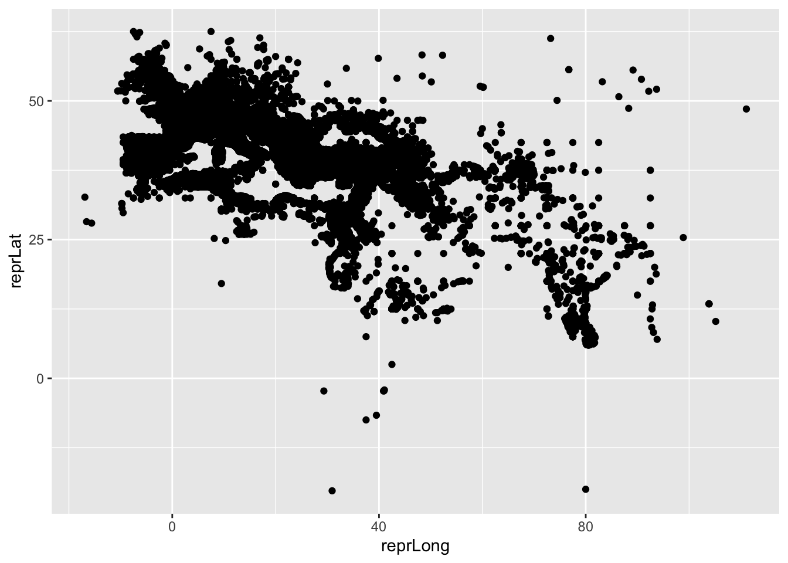
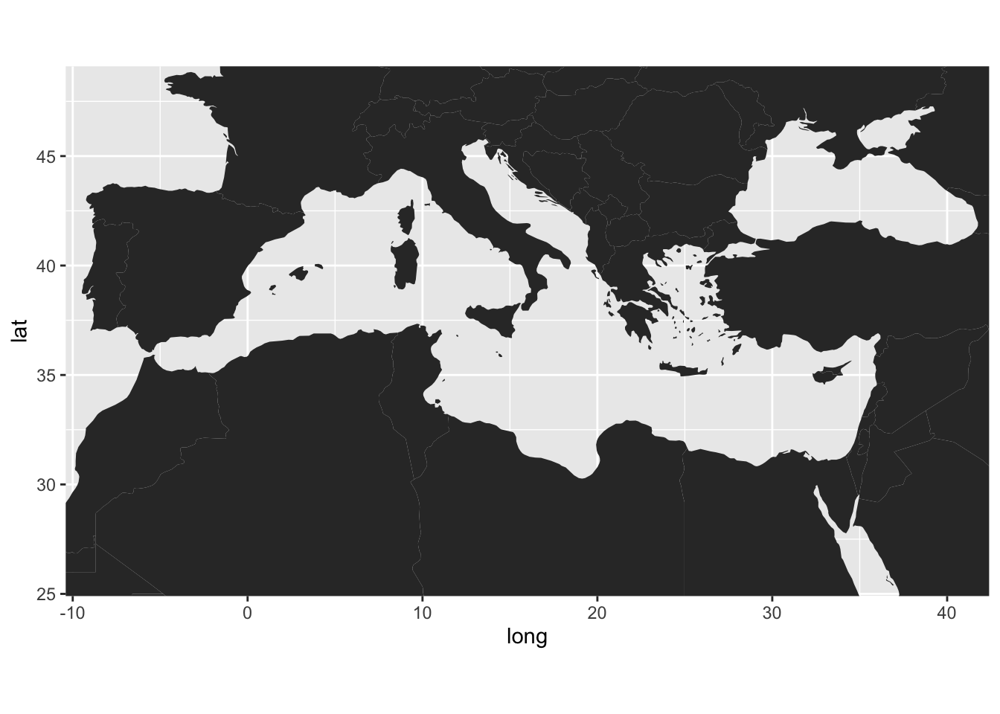
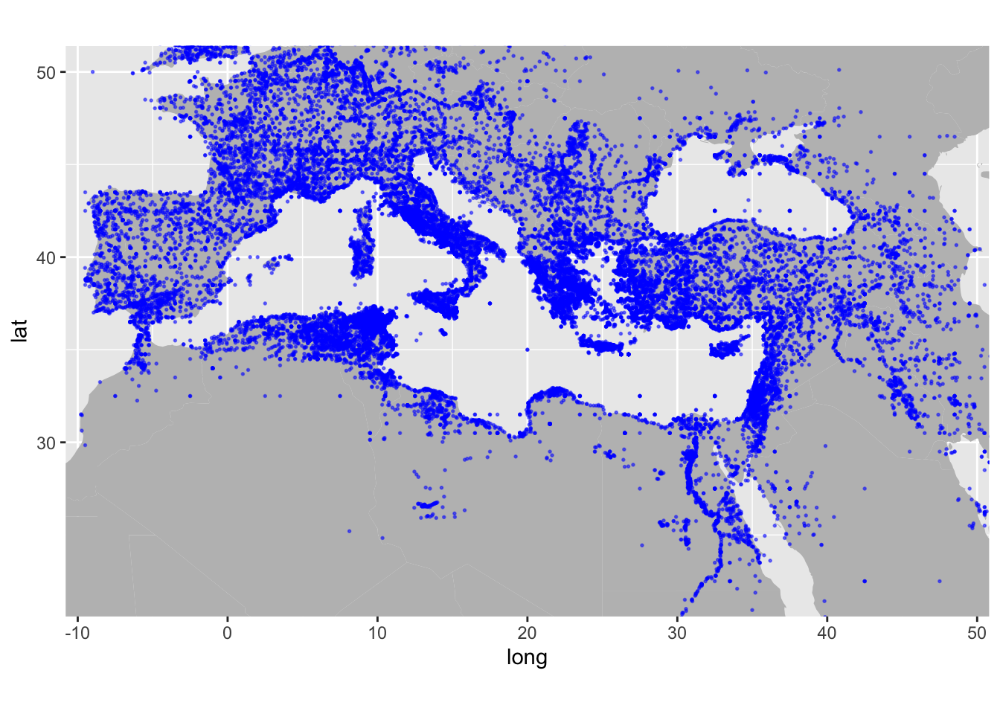

Sitzung 7 Geodaten
7.1 Lernziele dieser Sitzung
Sie können…
- Pipes benutzen
- einfache
dplyr-Befehle ausführen - Koordinaten visualisieren
7.2 Voraussetzungen
Wir laden erstmal tidyverse:
library(tidyverse)7.3 Exkurs: Pipes
Teil vom tidyverse ist auch das Paket magrittr, das einen besonderen Operator enthält: %>%
Der Operator %>% heißt Pipe
und setzt das Ergebnis der vorherigen Funktion als ersten Parameter in die nächste Funktion ein. Zur Veranschaulichung:
anzahl_buchstaben <- length(letters)
sqrt(anzahl_buchstaben)…ist das gleiche wie…
sqrt(length(letters))…ist das gleiche wie…
length(letters) %>%
sqrt()…ist das gleiche wie…
letters %>%
length %>%
sqrt()So können beliebig viele Funktionen aneinandergereiht werden. Und mit -> kann eine Variable „in die andere Richtung“ zugewiesen werden
letters %>%
length() %>%
sqrt() %>%
round() %>%
as.character() ->
my_varGerade bei komplizierteren Zusammenhängen wird der Code so oft lesbarer, weil die Logik von links nach rechts, bzw. von oben nach unten gelesen werden kann.
7.4 Daten importieren
Beim Open-Data-Portal der Stadt Frankfurt steht ein Baumkataster zur Verfügung.
Die Datei im CSV-Format (comma separated values) kann entweder heruntergeladen und durch klicken importiert werden, oder direkt über den Befehl:
baumkataster <- read_csv2("http://offenedaten.frankfurt.de/dataset/73c5a6b3-c033-4dad-bb7d-8783427dd233/resource/7a73520b-961a-4aad-a582-449e676c247c/download/gprojekteopen-datadatenamt-67datenbaumauswahl_veroffentlichung_4baumauswahl_veroffentlichung_4.csv")7.5 Überblick verschaffen
Mit summary() lässt sich eine Zusammenfassung der Werte generieren:
summary(baumkataster)
## Gattung/Art/Deutscher Name Baumnummer
## Length:118403 Min. : 1.0
## Class :character 1st Qu.: 24.0
## Mode :character Median : 82.0
## Mean : 232.7
## 3rd Qu.: 270.0
## Max. :20158.0
## NA's :1853
## Objekt Pflanzjahr Kronendurchmesser
## Length:118403 Min. :1645 Min. : 2.000
## Class :character 1st Qu.:1970 1st Qu.: 4.000
## Mode :character Median :1982 Median : 6.000
## Mean :1979 Mean : 6.688
## 3rd Qu.:1995 3rd Qu.: 9.000
## Max. :2017 Max. :63.000
##
## HOCHWERT RECHTSWERT
## Min. :5545117 Min. :463163
## 1st Qu.:5550428 1st Qu.:472715
## Median :5552601 Median :475219
## Mean :5552953 Mean :475244
## 3rd Qu.:5555165 3rd Qu.:478201
## Max. :5563639 Max. :485361
## Genauere Infos über diese Merkmale gibt es auf dem Datenportal.
7.6 Visualisieren
Wie in der letzten Lektion besprochen, lässt sich der Datensatz mit ggplot() visualisieren, z.B.:
ggplot(baumkataster, aes(x=Kronendurchmesser)) +
geom_histogram()
Eine neue Messreihe lässt sich z.B. so errechnen:
alter <- 2020 - baumkataster$Pflanzjahr
head(alter)
## [1] 100 100 100 100 100 100Der Befehl mutate() funktioniert sehr ähnlich, gibt aber den veränderten Datensatz zurück:
mutate(baumkataster, alter = 2020 - Pflanzjahr)
## # A tibble: 118,403 x 8
## `Gattung/Art/De… Baumnummer Objekt Pflanzjahr
## <chr> <dbl> <chr> <dbl>
## 1 Platanus x hisp… 1 Acker… 1920
## 2 Platanus x hisp… 2 Acker… 1920
## 3 Platanus x hisp… 3 Acker… 1920
## 4 Platanus x hisp… 4 Acker… 1920
## 5 Platanus x hisp… 5 Acker… 1920
## 6 Platanus x hisp… 6 Acker… 1920
## 7 Platanus x hisp… 7 Acker… 1920
## 8 Platanus x hisp… 8 Acker… 1920
## 9 Platanus x hisp… 9 Acker… 1920
## 10 Platanus x hisp… 10 Acker… 1920
## # … with 118,393 more rows, and 4 more variables:
## # Kronendurchmesser <dbl>, HOCHWERT <dbl>,
## # RECHTSWERT <dbl>, alter <dbl>Derselbe Befehl mit dem Pipe-Operator:
baumkataster %>%
mutate(alter = 2020 - Pflanzjahr)
## # A tibble: 118,403 x 8
## `Gattung/Art/De… Baumnummer Objekt Pflanzjahr
## <chr> <dbl> <chr> <dbl>
## 1 Platanus x hisp… 1 Acker… 1920
## 2 Platanus x hisp… 2 Acker… 1920
## 3 Platanus x hisp… 3 Acker… 1920
## 4 Platanus x hisp… 4 Acker… 1920
## 5 Platanus x hisp… 5 Acker… 1920
## 6 Platanus x hisp… 6 Acker… 1920
## 7 Platanus x hisp… 7 Acker… 1920
## 8 Platanus x hisp… 8 Acker… 1920
## 9 Platanus x hisp… 9 Acker… 1920
## 10 Platanus x hisp… 10 Acker… 1920
## # … with 118,393 more rows, and 4 more variables:
## # Kronendurchmesser <dbl>, HOCHWERT <dbl>,
## # RECHTSWERT <dbl>, alter <dbl>So lassen sich auch hier verschiedene Befehle verknüpfen. filter() beschränkt den Datensatz auf Merkmalsträger, die den Kriterien entsprechen:
baumkataster %>%
mutate(alter = 2020 - Pflanzjahr) %>%
filter(alter > 30) ->
alte_baeume
summary(alte_baeume)
## Gattung/Art/Deutscher Name Baumnummer
## Length:73859 Min. : 1.0
## Class :character 1st Qu.: 29.0
## Mode :character Median : 97.0
## Mean : 263.2
## 3rd Qu.: 314.0
## Max. :10489.0
## NA's :684
## Objekt Pflanzjahr Kronendurchmesser
## Length:73859 Min. :1645 Min. : 2.000
## Class :character 1st Qu.:1960 1st Qu.: 6.000
## Mode :character Median :1974 Median : 8.000
## Mean :1966 Mean : 8.503
## 3rd Qu.:1980 3rd Qu.:10.000
## Max. :1989 Max. :35.000
##
## HOCHWERT RECHTSWERT alter
## Min. :5545117 Min. :463163 Min. : 31.00
## 1st Qu.:5550415 1st Qu.:472667 1st Qu.: 40.00
## Median :5552480 Median :475708 Median : 46.00
## Mean :5552593 Mean :475402 Mean : 53.54
## 3rd Qu.:5554589 3rd Qu.:478539 3rd Qu.: 60.00
## Max. :5563639 Max. :485360 Max. :375.00
## Schließlich ergibt das Streudiagramm von Koordinaten so eine art Karte:
ggplot(alte_baeume) +
geom_point(size = 0.1, aes(x = RECHTSWERT, y = HOCHWERT))
Diesen Ansatz werden wir in der nächsten Lektion vertiefen.
7.7 Aufgaben
Besuchen Sie https://pleiades.stoa.org/ - worum geht es hier?
Finden Sie den kompletten aktuellen Datensatz für „locations“ als CSV-Datei.
Importieren Sie ihn in R und weisen Sie dem Datensatz den Namen
pleiadeszu.
pleiades <- read_csv("http://atlantides.org/downloads/pleiades/dumps/pleiades-locations-latest.csv.gz")- Finden Sie geeignete Werte für (einzelne) Längen- und Breitengrade im Datensatz.
pleiades$reprLong %>% # Längengrad
summary()
## Min. 1st Qu. Median Mean 3rd Qu. Max.
## -16.910 8.047 17.500 19.890 30.722 111.078
## NA's
## 7316pleiades$reprLat %>% # Breitengrad
summary()
## Min. 1st Qu. Median Mean 3rd Qu. Max.
## -20.00 36.25 39.11 39.53 43.73 62.50
## NA's
## 7316- Plotten Sie die Koordinaten auf x- und y-Achse mit
ggplot(). Was erkennen Sie?
ggplot(pleiades) +
geom_point(aes(x = reprLong, y = reprLat))
- Halbieren Sie die Größe und setzen Sie den Alpha-Wert der Punkte auf 0,2.
ggplot(pleiades) +
geom_point(aes(x = reprLong, y = reprLat), size = 0.5, alpha = 0.2)
- Bringen Sie die Grafik in die Mercator-Projektion.
ggplot(pleiades) +
geom_point(aes(x = reprLong, y = reprLat), size = 0.5, alpha = 0.2) +
coord_map("mercator")
- Schauen Sie sich diesen Befehl an:
map_data("world") %>%
ggplot() +
geom_polygon(mapping = aes(x = long,
y = lat,
group = group)) +
coord_quickmap(xlim = c(-8, 40),
ylim = c(26, 48))Versuchen Sie, jede einzelne Zeile nachzuvollziehen, indem Sie die entsprechenden Funktionen recherchieren.
Führen Sie den Befehl aus.

- Ändern Sie die Farbe der Flächen in hellgrau.
map_data("world") %>%
ggplot() +
geom_polygon(mapping = aes(x = long, y = lat, group = group),
fill = "grey") +
coord_quickmap(xlim = c(-8, 40),
ylim = c(26, 48))
- Wählen Sie einen Kartenausschnitt, auf dem Portugal, Ägypten, Irak und Frankreich komplett zu sehen sind.
map_data("world") %>%
ggplot() +
geom_polygon(mapping = aes(x = long, y = lat, group = group),
fill = "grey") +
coord_quickmap(xlim = c(-8, 48),
ylim = c(22, 50))
- Plotten Sie auf diesem Hintergrund den Datensatz
pleiades. Passen Sie dabei die Parameter so an, dass es Ihnen optisch zusagt.
map_data("world") %>%
ggplot() +
geom_polygon(mapping = aes(x = long, y = lat, group = group),
fill = "grey") +
coord_quickmap(xlim = c(-8, 48),
ylim = c(22, 50)) +
geom_point(data = pleiades,
mapping = aes(x = reprLong, y = reprLat),
color = "blue",
size = 0.3,
alpha = 0.5)
- Wählen Sie für die Karte die Bonnesche Projektion mit Standardparallele bei 40°N.
map_data("world") %>%
ggplot() +
geom_polygon(mapping = aes(x = long, y = lat, group = group),
fill = "grey") +
coord_map("bonne", 40,
xlim = c(-8, 48),
ylim = c(22, 50)) +
geom_point(data = pleiades,
mapping = aes(x = reprLong, y = reprLat),
color = "blue",
size = 0.3,
alpha = 0.5)- Entfernen Sie alle Achsenbeschriftungen.
map_data("world") %>%
ggplot() +
geom_polygon(mapping = aes(x = long, y = lat, group = group),
fill = "grey") +
coord_map("bonne", 40,
xlim = c(-8, 48),
ylim = c(22, 50)) +
geom_point(data = pleiades,
mapping = aes(x = reprLong, y = reprLat),
color = "blue",
size = 0.3,
alpha = 0.5) +
theme(axis.title = element_blank(),
axis.ticks = element_blank(),
axis.text = element_blank())- (Achtung: extrem knifflig!) Bilden Sie diese Grafik nach, die die Orte geordnet nach ältestem Fund darstellt:
pleiades %>%
select(long = reprLong,
lat = reprLat,
timePeriods) %>%
mutate(oldest = str_extract(timePeriods, "[ACHRL]")) %>%
mutate(oldest = factor(oldest, levels = c("A", "C", "H", "R", "L"))) ->
pleiades_periods
map_data("world") %>%
filter(region != "Antarctica") %>%
ggplot() +
geom_polygon(mapping = aes(long, lat, group = group),
fill = "darkgreen") +
coord_map("albers",
parameters = c(16, 37),
xlim = c(-8, 40),
ylim = c(26, 48)) +
geom_point(data = pleiades_periods,
mapping = aes(long, lat, color = oldest),
size = 0.2,
alpha = 0.3) +
scale_color_brewer("Früheste Epoche",
breaks = c("A", "C", "H", "R", "L"),
labels = c("1000-550 v.d.Z.",
"550-330 v.d.Z.",
"330 v.d.Z. - 30 n.d.Z.",
"30-300 n.d.Z.",
"300-640 n.d.Z."),
palette = "YlOrBr") +
theme(axis.title = element_blank(),
axis.ticks = element_blank(),
axis.text = element_blank(),
panel.background = element_rect(fill = "darkblue"),
panel.grid = element_line(color = "blue")) +
guides(colour = guide_legend(override.aes = list(alpha = 1,
size = 8,
shape = 15)))